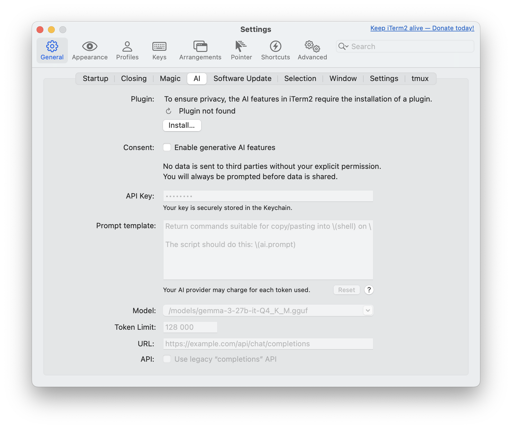
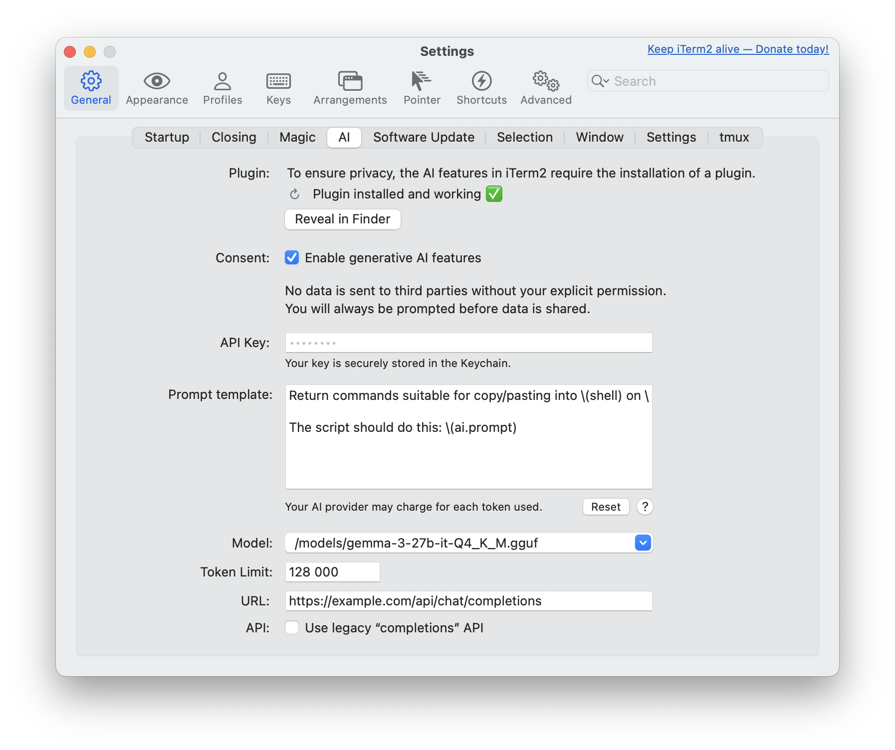
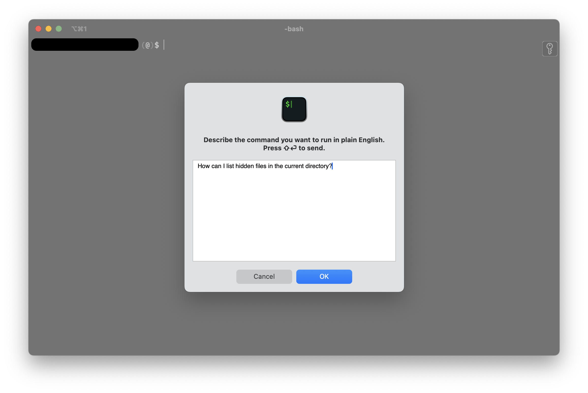
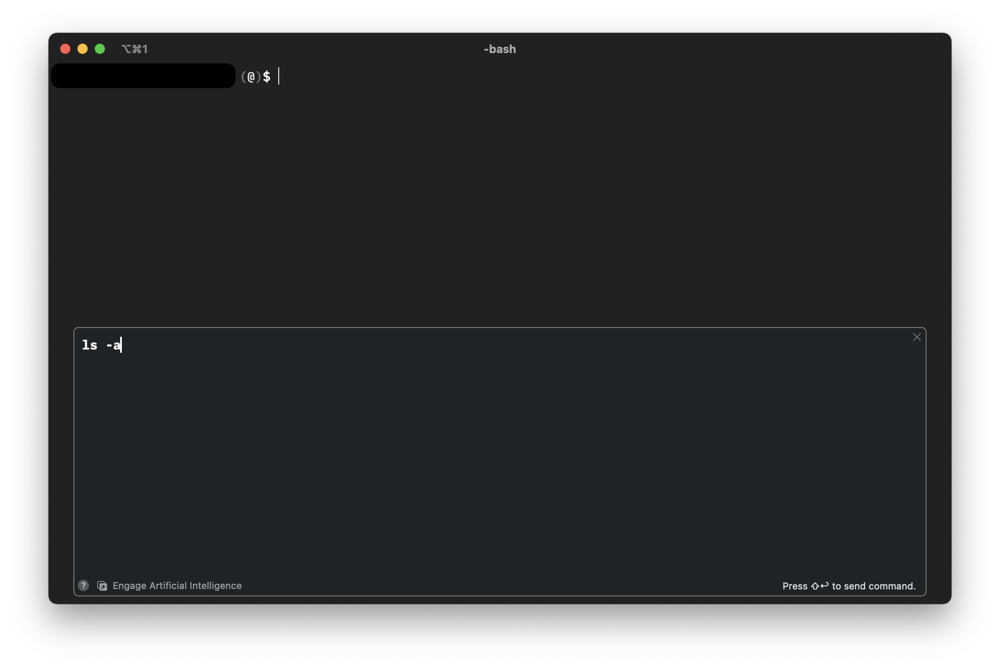

This tutorial is a community contribution and is not supported by the Open WebUI team. It serves only as a demonstration on how to customize Open WebUI for your specific use case. Want to contribute? Check out the contributing tutorial.
Use your Open WebUI models with Iterm2
You can use your Open WebUI models within the Iterm2 AI plugin. This guide shows you how to set up the necessary configuration.
Why use the Iterm2 AI plugin?​
Whenever you forget a command or need a quick bash script for a repetitive task, you likely already use AI responses. To streamline this workflow, the Iterm2 AI plugin allows you to send requests to your specified AI provider or your Open WebUI.
Why connect to your Open WebUI instance?​
Open WebUI provides a simple and straightforward way to interact with your LLMs via its API Endpoints. This is particularly beneficial if you are running your own LLMs locally. Furthermore, you can leverage all your implemented features, monitoring, and other capabilities.
Prerequisites​
1. Download the iTerm2 AI plugin​
If you haven't already installed the iTerm2 AI plugin, you'll need to download it first from their page. Unzip the file and move the application into your Applications folder.
2. Generate your Open WebUI API key​
To authenticate with your Open WebUI instance, you'll need to generate an API key. Follow the instructions in this guide to create it.
Configuration​
Open your iTerm2 terminal and navigate to Settings (⌘,) from the iTerm2 menu, then select the AI tab.

Verify the installed plugin​
Once the iTerm2 AI plugin is installed, verify that the Plugin section shows Plugin installed and working ✅.
Give consent for generative AI features​
Under the Consent section, check the box for Enable generative AI features to agree.
Set API key​
Enter your previously created Open WebUI API token into the API Key field.
Optional: customize your prompt​
If you want a specialized prompt sent to your LLM, feel free to edit the Prompt template.
Original prompt example:
Return commands suitable for copy/pasting into \(shell) on \(uname). Do
NOT include commentary NOR Markdown triple-backtick code blocks as your
whole response will be copied into my terminal automatically.
The script should do this: \(ai.prompt)
You can read more about the Iterm2 prompt in the Iterm2 documentation.
Select Your LLM​
Since the iTerm2 AI plugin does not automatically list your custom models, you'll need to add your preferred one manually.
In your Open WebUI instance, navigate to Admin Panel > Settings > Models, and then click on your preferred LLM.
Below the user-given name, you'll find the actual model name that you need to enter into iTerm2 (e.g., name: Gemma3 - model name: /models/gemma3-27b-it-Q4_K_M.gguf).
Adjust the Tokens​
Set your preferred amount of tokens here. Typically, your inference tool will already have a limitation set.
Adjust the URL​
This is a crucial step: you need to direct the iTerm2 AI plugin requests to your Open WebUI instance.
Either use an actual domain name if the instance is hosted somewhere (e.g., https://example.com/api/chat/completions) or your localhost setup (e.g., http://localhost:8080/api/chat/completions).
You can find more information about the URLs in the API Endpoints guide.
Legacy Completions API​
This setting is not needed for Open WebUI, though more information is available in the original guide.
After setup, the AI section will look like this:

Usage​
Within your terminal session, open the prompt input field by pressing command + y (⌘y). Write your prompt and send it by clicking the OK button or by using shift + enter (⇧⌤).

This will lead you back to the terminal with an additional window bound to the session frame. The result of your query will be displayed within this overlay. To send the command to your terminal, move your cursor to the target line and use shift + enter (⇧⌤).
There can be more than one line of response. If so, you can navigate with the arrow keys to edit the commands as needed.
